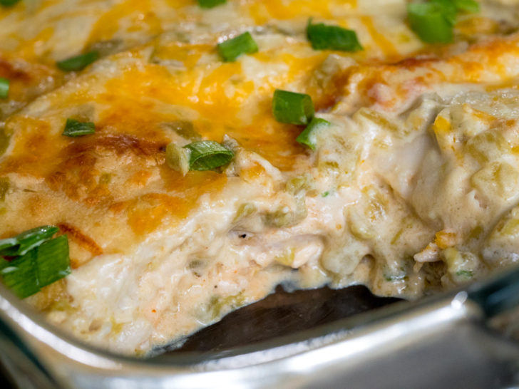

White People (Cream Cheese Chicken) Enchiladas

These are adapted from a recipe my mother made when I was in high school. It's very simple, but I've added some steps to make them a little better. These are not true enchiladas but do use a filling rolled in a tortilla and drowned in Enchilada sauce.
Equipment
- Sous vide (100% optional, but the chicken will be nicer if you have one.)
Ingredients
- 1-1/2-2 lbs boneless skinless chicken breast or thighs
- 2 T salt
- 2 T butter
- 1 large yellow onion, diced
- 1 clove garlic, minced or crushed
- 1 8oz brick cream cheese, softened
- 1/4-1/2 cup chicken broth (optional if boiling chicken)
- 1 small or medium can green chilis (Rotel or Hatch brand)
- 1 T cumin
- 1 t paprika
- 1 t chili powder
- salt and pepper to taste
- 1 pkg 12 count soft taco-sized flour tortillas
- 1-2 cans green enchilada sauce
- 1-2 cups shredded cheese (cheddar, monterey jack, Mexican blend, etc.)
- sour cream, for garnish
Directions
Step 1 - Cook chicken
- Preheat oven to 350°F. Grease a 13" x 9" baking pan.
- Bring 2-4 qts of water to boil, seasoned with 1 T salt, enough to cover chicken. Boil chicken breast for 10-25 minutes until fully cooked and easily shreddable. Reserve chicken broth for later.
- Optional (Sous Vide): If you do own a sous vide cooker, chicken breast is a great application and will produce moister, less stringy chicken in general. The chicken breasts (with a small amount of salt) can be cooked in the sous vide method for 1-2 hrs at 150°F for ideal results--very moist, tender chicken that is still shreddable. For more info on cooking chicken breast sous vide safely and deliciously, check out this great article on Serious Eats.
- Shred chicken into bite size pieces and set aside.
Step 2 - Make Filling
- In a wide skillet, melt 2 T butter in bottom of pan over medium heat. Once butter is melted, add diced onions and 1 T salt. Sweat onion until translucent. Add crushed garlic for 1-2 minutes until fragrant.
- Add block of cream cheese, with a small amount of chicken broth, stirring until melted. Add shreded chicken and green chilies and stir until combined. Add chicken broth to achieve desired consistency. (Mixture should be slightly more wet than desired finihsed product.) Add spices one by one to taste, including salt and pepper to taste. Reduce heat to low or turn off to prepare filling for assembly.
-
Step 3 - Roll Enchiladas
- Remove tortillas from package. For each tortilla, take approximately 3-4 heaping tablespoons of filling for each one, and spread in a uniform line across center of tortilla. Fold tortillas in half with filling in center, then crease the tortilla above the filling and roll the remaining tortillas around the tube. Place filled, rolled tortillas side by side in the baking dish.
- Note: traditionally, tortillas (usually corn) are fried lightly in a seperate skillet, dipped in warm enchilada sauce, then rolled or stacked with filling to make enchiladas. Feel free to adapt this or other techniques.
-
Step 4 - Bake Enchiladas
- Once all tortillas are rolled. Pour can(s) of enchilada sauce over top, spreading with a spatula if necessary. Be sure to cover all exposed edges of tortillas to prevent burning and maximize flavor. If using two cans of sauce some can also be added to the bottom of the pan before filling.
- Bake for 20-30 minutes until edges of tortilla begin to brown. Remove from oven, sprinkle cheese evenly over top, then return to oven for 5-10 minutes until cheese is melted and bubbly. Remove from oven and allow to rest for 10-15 minutes.
- Plate 1-2 enchiladas per serving and serve with sour cream and other toppings.